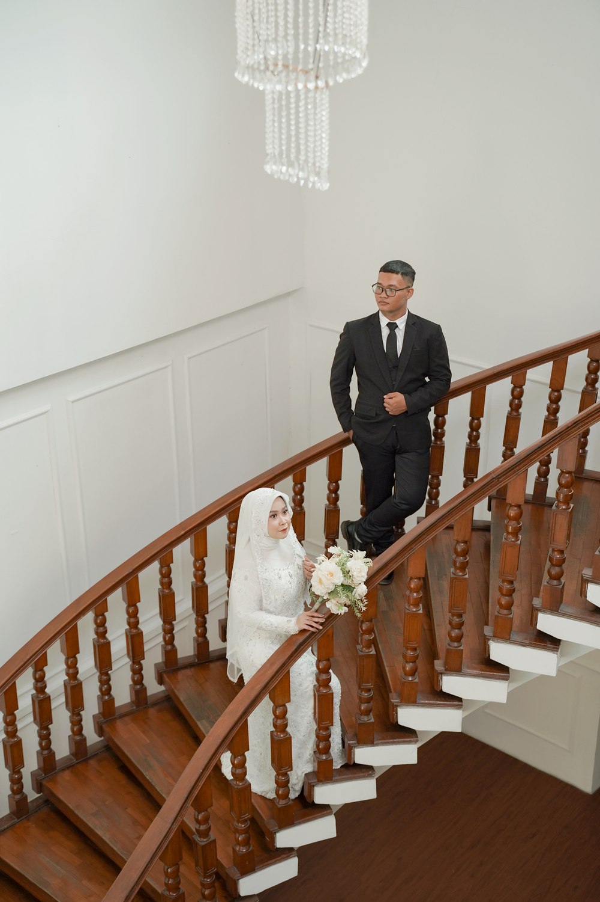
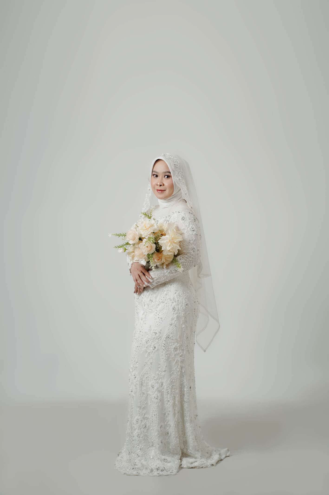
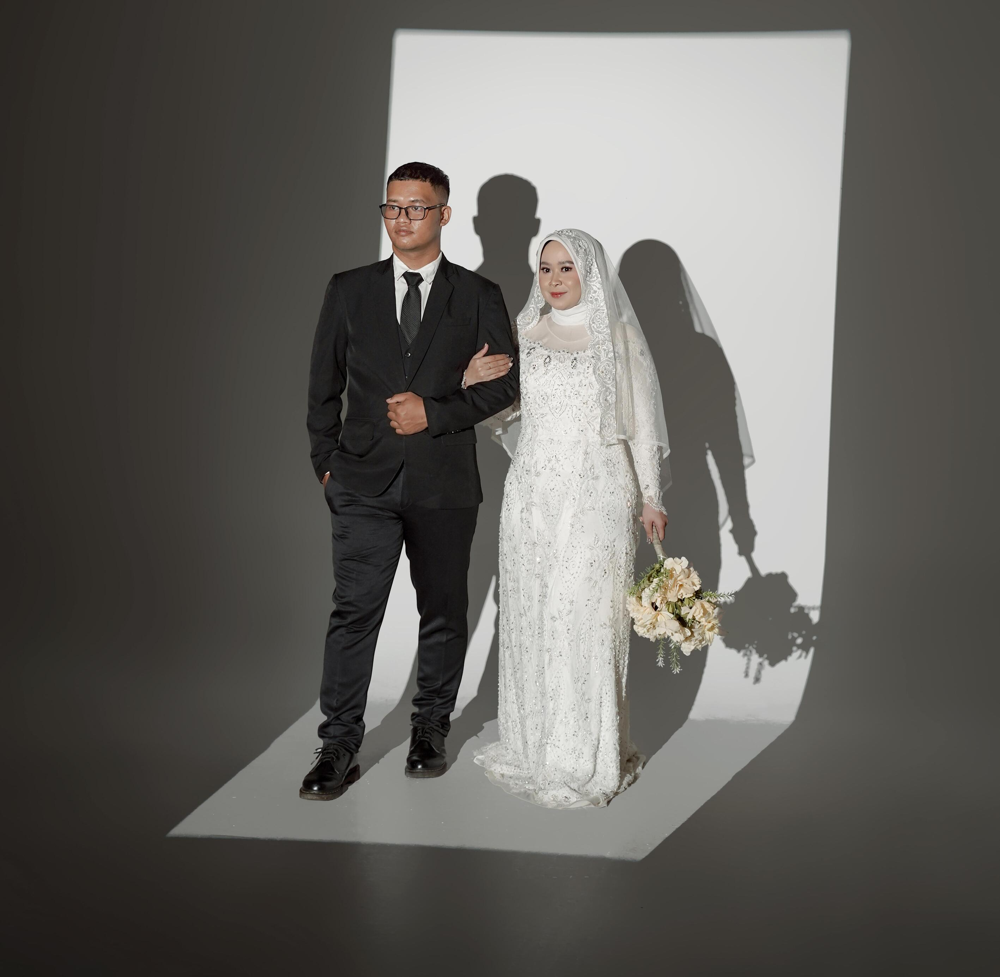
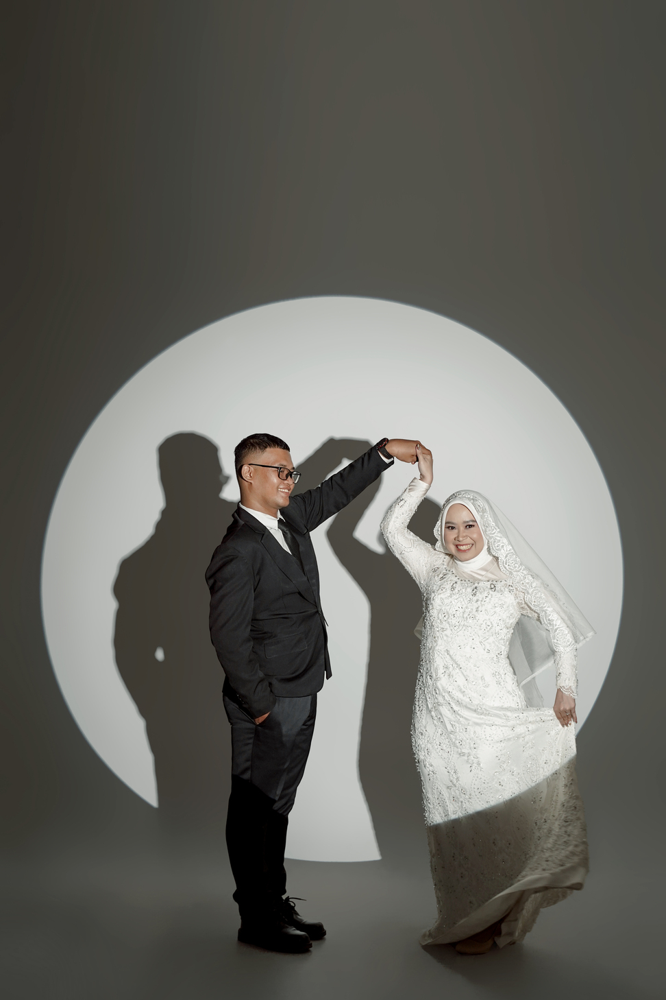
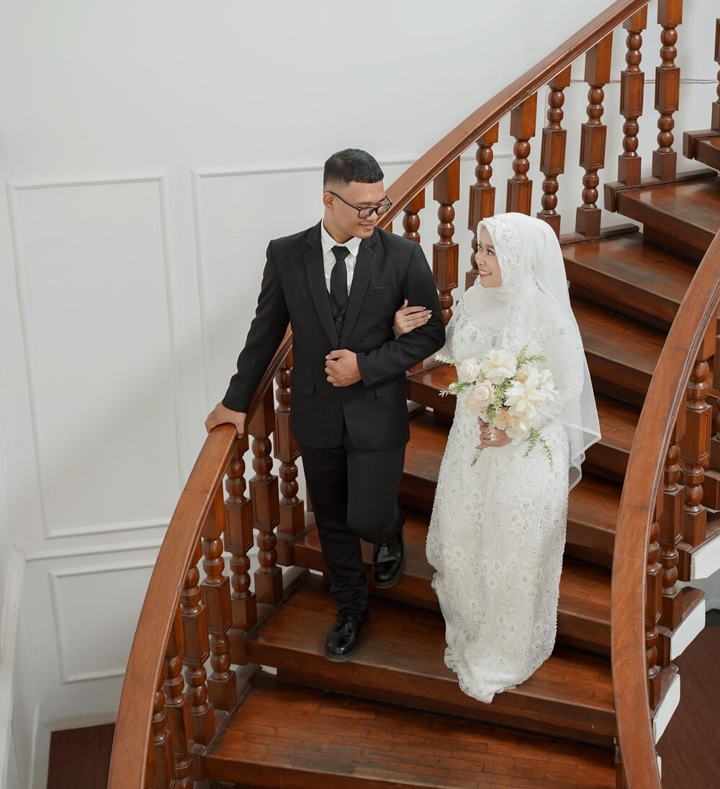
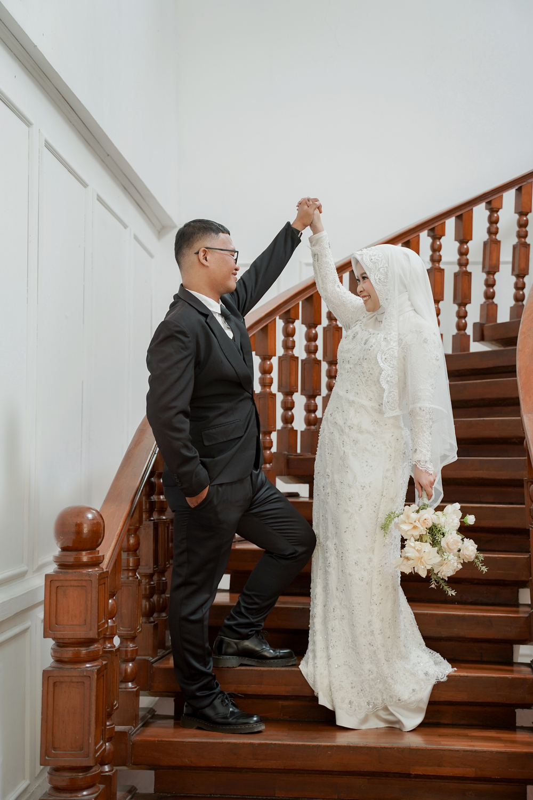

The Wedding of
Shania & Bayu
Dan di antara tanda-tanda (kebesaran)-Nya ialah Dia menciptakan pasangan-pasangan untukmu dari jenismu sendiri, agar kamu cenderung dan merasa tenteram kepadanya, dan Dia menjadikan di antaramu rasa kasih dan sayang. Sungguh, pada yang demikian itu benar-benar terdapat tanda-tanda (kebesaran Allah) bagi kaum yang berpikir.
QS. Ar-Rum: 21


Our Story
The Beginning
Where our paths firts crossed.
A Love Story Begins
Two hearts, one beutiful journey.
Forever Begins
A lifetime of choosing each other.
11.12.2026

Save The Date
Jumat, 11 Desember 2026
08:00 - 11:00
13:00 - 15:00
Kediaman Mempelai WanitaCiketing Asem, Mustikajaya, Kota Bekasi

Our Gallery

Wedding Gift
Doa restu Anda adalah hadiah terindah bagi kami. Bila ingin berbagi kebahagiaan, dapat melalui:

Terima kasih
Merupakan kehormatan dan kebahagiaan bagi kami apabila Bapak/Ibu/Saudara/i berkenan hadir dan memberikan doa restu.